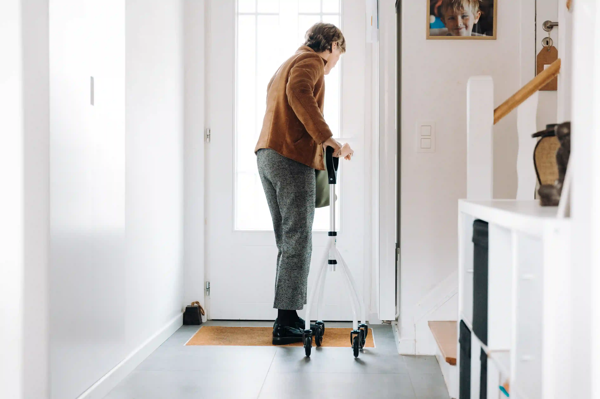
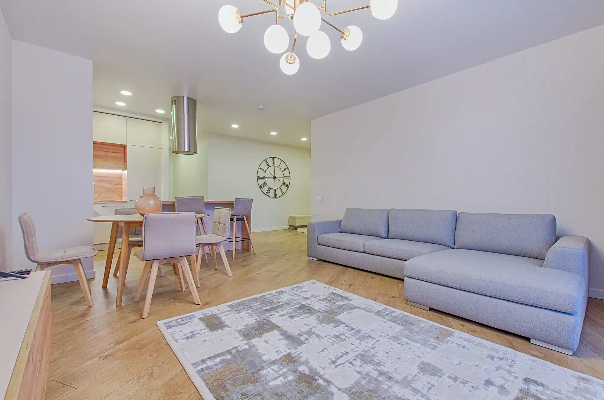

From our care team
Honest, practical writing from our doctors, therapists and families who have walked the road to recovery.


Featured read
Recovery rarely moves in a straight line. Our medical director explains what the research says about rest, routine and the small habits that carry people through the hardest weeks.
By Dr. Meera Iyer, 9 minute read
Read the articleBrowse by topic
Pick a subject to filter the articles below.
Latest articles
What progress really looks like, week by week, and when to ask for help.

Gentle openings, words to avoid and how to keep the door open.
Understanding triggers so you can plan around them, not against them.

Simple techniques that settle a racing mind, at any hour of the day.

Why trust in your body returns slower than strength, and how to speed it up.
Routines, boundaries and check-ins that make the return easier for everyone.

What poor sleep does to healing, and the evening habits that help.
How to prepare for setbacks so one hard day never becomes a hard year.

No articles match yet. Try another topic.
A word from our director
We write what we wish every family had been told on day one: that healing is slow, uneven and absolutely possible.
Monthly newsletter
New articles and practical tips from our care team. No spam, and you can leave any time.
Enter your email and we will send the next issue.
Your address is never shared.
Common questions
Clear, honest answers to what families and readers ask us most. Can't find yours? We are happy to talk.
No. You can call or write to us at any hour. An advisor will listen first, then explain the options. Every conversation stays confidential.
You do not need to decide alone. After an initial conversation, our doctors and therapists assess physical, emotional and personal needs and suggest a plan that fits.
Yes. Families are an important part of recovery, and our articles and sessions are written to help loved ones support progress without taking on everything alone.
No. They are written to inform and reassure, not to diagnose. If you have a health concern, please speak with a doctor or contact our team directly.